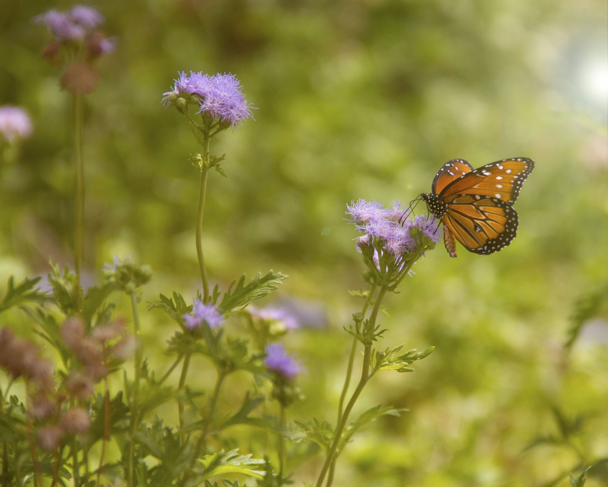
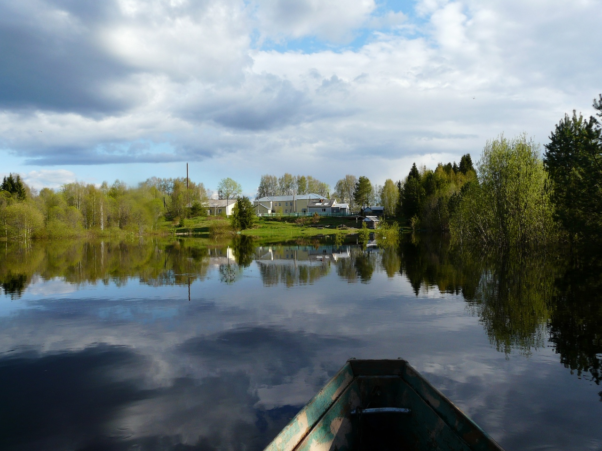

Весна. Грязные дороги и красоты природы.⠀⠀⠀⠀⠀⠀
Весна - это время появления цветов из под снега,
это время любви и грязи на дорогах из-за таяния снега.
Это время года у людей ассоциируетс с совершенно разными
явлениями, происходящими на улице и внутри людей.
Давайте разберем, почему весна может быть как хорошим
временем года, так и довольно неприятным.
1. Свежий воздух
Многие в своей жизни замечали, что воздух весной гораздо приятнее,
чем когда-либо. Чувствуется запах надежды и оттаивания снега и льда.
Первый пар от земли и тающий снег дают эффект, который мы привыкли
называть запахом весны. Особо отчётливо слышится запах наступившей
весны за городом — это запах распускающихся почек на деревьях.
2. Новые возможности
Таяние снега дает возможность посещать места,
которые были закрыты снегами и льдами в зимнее время.
Пикники и походы - это чуть ли не символ периода таяния снега,
где можно развлечься с близкими для тебя людьми.
Всё это, вкупе с шумопоглощением, описанным в предыдущем разделе,
положительно влияет на психику людей.
3. Красоты природы
Весна - это период, когда любители природы всегда приходят в восторг.
А всё потому, что начинается время цветения и распускания растений.
Весна - это любимое время многих поэтов и художников,
ведь когда еще можно обозреть такие красивые пейзажи,
только появившейся из под снега земли и ее чудес.

1. Дороги
Главным минусом, который можно отметить - это таяние снега
на тротуарах и прочих дорогах для пешеходов, где проходимость
становится крайне трудной из-за смеси грязи и снега.
Такие проблемы часто заставляют людей весной сидеть дома
максимально возможное время, пока снег не оттает полностью.
2. Нестабильные температуры
Весна - это время года, когда температура может заставить
выйти в футболке, а может побить зимнюю по холоду.
Это вызывает частые затруднения в выборе одежды для выхода на улицу,
ведь никогда не знаешь, что будет через час, когда солнце зайдет за тучи,
поэтому весной часто у многих людей под рукой имеется от двух
комплектов одежды - зимняя и весенняя, чтобы не попасть
в сложную ситуацию из-за резкой смены погоды.
3. Половодья
Таяние снега приносит с собой такую вещь, как половодья,
которые доставляют большие проблемы для жителей прибрежных районов.
Чаще всего от этой проблемы страдают жители сёл и деревень, где это
явление трудно контролировать своими силами.
⠀⠀⠀⠀⠀
Оставить комментарий ッ